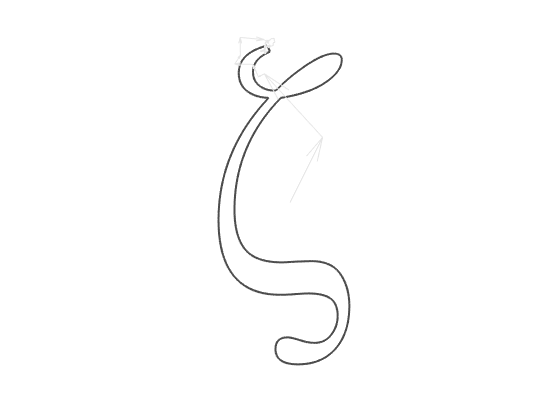
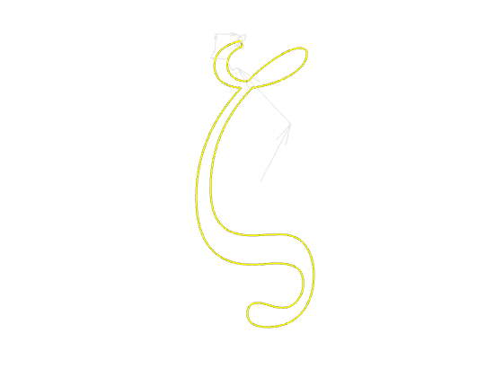

2D Line Art Fourier Transform Animation
Contents
Loading 2D Line Data
clear; close all s = load('R_zeta.mat'); % The coordinates of the curve you want to draw must be saved in .mat beforehand.
The x coordinate is converted into a complex number with the real part and the y coordinate as the imaginary part.
position = complex(s.R(:,1),s.R(:,2));
Ndata = length(position); % Number of Data Point
Number of Fourier Series
Ncoef = 500;
CFFT
tmp_coef = fft(position);
FFTW(Link)
"From above, an FFTW_FORWARD transform corresponds to a sign of -1 in the exponent of the DFT. Note also that we use the standard "in-order” output ordering?the k-th output corresponds to the frequency k/n (or k/T, where T is your total sampling period). For those who like to think in terms of positive and negative frequencies, this means that the positive frequencies are stored in the first half of the output and the negative frequencies are stored in backwards order in the second half of the output. (The frequency -k/n is the same as the frequency (n-k)/n.)"
Number of coefficient is Ncoef: Use Ncoef/2 pairs in order of decreasing frequency (Even Ncoef)
1,2,3,...,Ncoef/2
Ndata, Ndata-1, Ndata-2,..., Ndata-Ncoef/2+1
First, create a vector k _ idx that represents the position of the corresponding element in order of decreasing frequency.
idx1 = 1:Ncoef/2; idx2 = Ndata:-1:Ndata-Ncoef/2+1; tmp_idx = [idx1;idx2];
Rearrange
1, Ndata, 2, Ndata-1, 3, Ndata-3, ..., Ncoef/2, Ndata-Ncoef/2+1
Only the coefficients used are assigned to Fcoef.
k_idx = tmp_idx(:)'; Fcoef = tmp_coef(k_idx);
Inverse Fourier Transform and Calculation of Reproduced Coordinate Points
- pos_Nocef: Coordinate points reproduced by N_coef coefficients (Complex number | Ndata x1 |)
- pos_NcoefMatrix: The effects of each factor are decomposed and stored (Complex | Ndata x Ncoef |)
pos_Ncoef = zeros(Ndata,1); pos_NcoefMatrix = zeros(Ndata,Ncoef); for jj=1:Ndata pos_Ncoef(jj) = (exp(1i*2*pi*(k_idx-1)*(jj-1)/Ndata)*Fcoef)/Ndata; pos_NcoefMatrix(jj,:) = (exp(1i*2*pi*(k_idx-1)*(jj-1)/Ndata).*Fcoef.')/Ndata; end % pos_Ncoef = sum(pos_NcoefMatrix,2); % pos_Ncoef is same as this equation.
Draw reproduced coordinate points
figure(1) plot(real(position),imag(position),'r'); hold on plot(real(pos_Ncoef),imag(pos_Ncoef),'b*'); hold off axis equal ax=gca; ax.YDir='reverse'; legend("Origial","Ncoef")
Vector display of each coefficient component
fig_movie = figure(2); fig_movie.Color=[0.1,0.1,0.1]; Rg=plot(real(position),imag(position),'LineWidth',2,'Color',[0.3 0.3 0.3]); hold on axis equal ax=gca; ax.YDir='reverse'; xlim([-1000 1000]) ylim([-1000 1000]) ax.Color=[0.1,0.1,0.1]; box off axis off % Cumulative sum of each coefficient component is taken from the lower frequency. pos_cumsum = cumsum(pos_NcoefMatrix,2); x0 = real(pos_cumsum(1,1:end-1)); % origin x y0 = imag(pos_cumsum(1,1:end-1)); % origin y u0 = real(pos_NcoefMatrix(1,2:end)); % x elements v0 = imag(pos_NcoefMatrix(1,2:end)); % y elements h2=quiver(x0, y0, u0, v0,... 'AutoScale','off',... 'LineStyle','-',... 'LineWidth',0.5,... 'Color',[0.9 0.9 0.9],... 'MaxHeadSize',1);
Video display of each coefficient component
Z=plot(position(1),'-y','LineWidth',1.5); % Reference line recording = false; if recording writerObj=VideoWriter('zeta100.avi'); %#ok<UNRCH> open(writerObj); end for iter = 1:numel(position)-1 xIter = real(pos_cumsum(iter,1:end-1)); % origin x yIter = imag(pos_cumsum(iter,1:end-1)); % origin y uIter = real(pos_NcoefMatrix(iter,2:end)); % x element vIter = imag(pos_NcoefMatrix(iter,2:end)); % y element h2.XData = xIter; h2.YData = yIter; h2.UData = uIter; h2.VData = vIter; Z.XData=real(pos_Ncoef(1:iter)); Z.YData=imag(pos_Ncoef(1:iter)); drawnow if recording frame=getframe(fig_movie); %#ok<UNRCH> writeVideo(writerObj,frame) end end if recording close(writerObj) %#ok<UNRCH> end